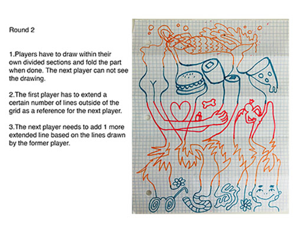

Interview Question: Who is Your Favorite Chinese Movie Star
Answer: Jackie Chan, and Jet Li. Jackie Chan is the best. Quite a fighter, sometimes funny.
He brought Chinese culture to America and I love him from the childhood. A similar actor in Hollywood?
Probably Mike Tyson, the boxer. I think he would have a good chance to beat Jackie Chan.
Or James Bond. I feel like they probably go for the same role, you know, like the action part.
But Jackie Chan is more of a protector while James Bond is more of a killer.